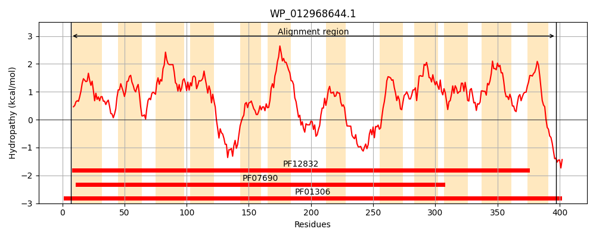
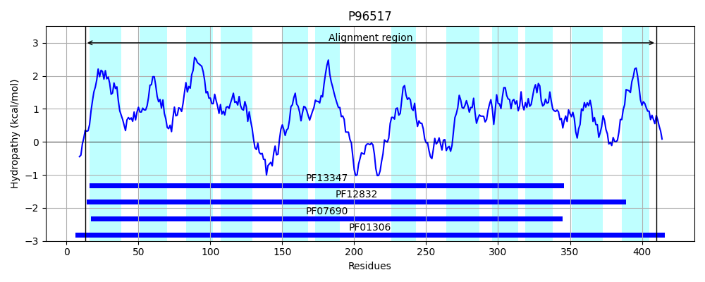
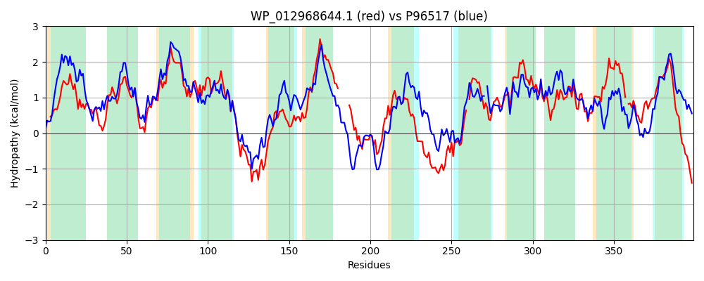

Hit Accession: P96517
Hit TCID: 2.A.1.5.4
Hit Description: gnl|BL_ORD_ID|11745 gnl|TC-DB|P96517|2.A.1.5.4 MelY - Enterobacter cloacae.
Mach Len: 399
e:0.000000
Query TMS Count : 12
Hit TMS Count: 12
TMS-Overlap Score: 10.100000
Predicted Substrates:CHEBI:5584;hydron, CHEBI:6733;melibiose, CHEBI:6353;alpha-lactose
BLAST Alignment:
Score: 820 , Bit scores: 320 bits, E-value: 1.9e-106, Alignment length: 399, Percentage identity: 40
Query: 7 NYLLLSLFDFLYLFAWSSTMAFFVIWTTQHLGISATKTGLLYSVNAFIALLMQPFFGFISDKFGLKKRLIWLLVALLLPVGPFFIYVYAPLLVHNFWFGALLGGIYLGIIFNSGCGVIDSYIDKISRRYQFEYGRVRMWGSLGWAAAAWIVGKYIDSNPNLAFWLASLAIVIAAICFMLTK------IELTDADVARSESLKVSHALELAKNGQFWMLLLFTLFVTQIYDTYDQQFAQYFSLQFPTPEEGNRWYGILASI-QVCGETLFLCLMPWFVNRTGAKWALIIAGLIMSVRIVGSAVPLGPVWIGAVKMMHALEKPLILVSVFKFIAANFDHKLSSTVYLLVLFVASIATAIY-SPLAGYLYDTIGFADTYLILGGIAGLFTLISIFTLKDKRE 397
N+ + LF FLY F ++ F IW + +G++ T TG+++S + A+ QP G ISDK GLKK L+W++ LL PFF+YV+APLL N W GAL GG+Y+G +F++G G I++YI+++SR FEYG+ RM+G LGW A G +P+ FW+ S A ++ + ++ K ++ +A A + L + + WM +L+ + V +YD +DQQFA +F F TP+EG R +G + ++C + C PW +NR GAK L+IAGLIM+ RI+GS+ V + A+KM+HALE P +LV FK+I FD +LS+T+YL+ A + AI+ S AG +YD IGF +TYL+LG T++S FTL ++E
Sbjct: 13 NFWIFGLFFFLYFFIMATCFPFLPIWLSDIIGLNKTHTGIVFSCISLSAIAFQPVLGVISDKLGLKKHLLWIISVLLFLFAPFFLYVFAPLLKTNIWLGALSGGLYIGFVFSAGSGAIEAYIERVSRNSAFEYGKARMFGCLGWGLCASTGGILFGIDPSYVFWMGSAAALLLMLLLVVAKPKPNQTAQVMNALGANQPQITAKKVFNLFRQRRMWMFILYVIGVACVYDVFDQQFATFFKTFFATPQEGTRAFGFATTAGEICNAIIMFC-SPWIINRIGAKNTLLIAGLIMATRIIGSSFATTAVEVIALKMLHALEVPFLLVGAFKYITGVFDTRLSATIYLIGFQFAKQSAAIFLSAFAGNMYDRIGFQETYLMLGCFVLAITVVSAFTLSSRQE 410 | Protein Hydropathy Plots: |
|---|
|  |  |
Pairwise Alignment-Hydropathy Plot:
|
|---|
|  |